A man accepts that his love will never be returned and, before leaving, calls on the moon, his mother and his father, then walks east into a morning where he is broken and hurt, but heard.


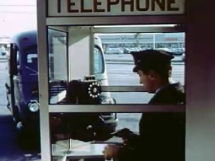
The poem
The poem is a leave-taking in three rounds, each opened by 'Before I go': the moon with the EX ('the way we used to see it'), a call to his mother 'in tears, speaking of an abyss she's never known', and a call to his father, summoned 'from the yonders'. The packing refrain moves from 'I gather my things' to 'You help me gather' to 'She watches us gather', so the leaving is witnessed by more people each time. 'What isn't mine I still cannot give' is the centre: he cannot give a love the EX never returned, and he cannot give his mother a birth story she will not take in.
The pivot is 'Before I go, I call on my mother'. Up to that line the poem is about the couple; after it, about the family. The imagined life together ('we grow old together', 'talk for years and travel through time') is redone with each parent, and the moon goes from shared ('look at the moon') to watching ('the moon looking at us') to sinking ('a settling down moon'). The governing images are tears falling 'between the creases' of faith and of the harbor waves, the inner harbor, footsteps walked east toward sunrise, and the closing pun of the title: 'Yet broken, yet hurt' / Yet, Heard.
Look
Night is cold moon key light plus spill from lit glass (club panels, the booth's fluorescent box); dawn comes in as sodium-orange fog from the east, not as clean sunlight. The quay and booth are dark corrugated card with gloss-varnished wet patches; the moon is a cream card disc on a brad that can climb and set; tears are clear acetate drops. The mother's room is warmer kraft with a printed floral wallpaper and a lamp pool, so it reads as an interior inside a night world.
Our best elements
The strongest things we already have for this poem: generated footage, Atlantis views, found film and painted kit sheets.
plate for 09.1a/b club sidewalk and the passage; panels become the 'glass exit door' surface
Figure-free, a row of bright vertical panes over a black wet street; the strongest archive-window surface in the poem
atlantis_harbor_street plate for 09.1c/d and the breakup in the background
Empty stone quay, lamp rows and long reflections; room for two back-view puppets on the lip
far layer for 'we look at the moon the way we used to see it'
The moon and its reflection over still water, no figures, already dreamlike
harbor_path_east plate for father and son (09.3c, 09.4a)
A glowing rail leading to a vanishing point reads as 'east toward the sunrises'; its tiny far walkers can be the distant breakup
reference for the phone booth card; insert for 'I call on my mother'
Real glass booth, wall phone, man in a cap; gives the period and the panes
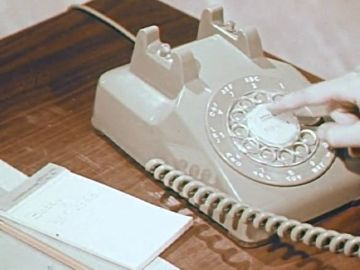
mother's corded_phone reference and an insert when she picks up
Exact cream rotary with coiled cord, warm wood table
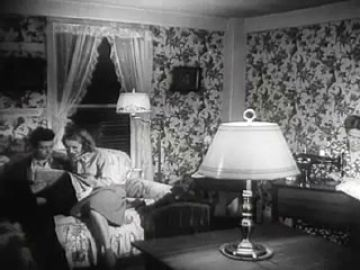
mother_living_room reference and an inside-the-window plate
Floral wallpaper, lamp, couple on a sofa: the domestic register the poem needs
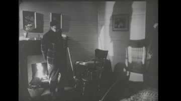
answer film for 'we explain my way of birth', in the mother's room
A documentary about midwifery and birth; kin to the line, and it matches the room's period

plays inside the cut-out moon disc
Bright, centred, high-contrast disc that fills a round hole cleanly
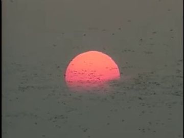
'the sun comes up out of the harbor mouth' (09.4a)
A red disc sitting on flat water, exactly the staged image
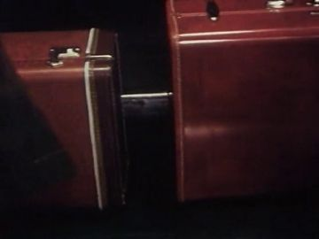
insert for 'You help me gather my things to go'; suitcase card reference
Two hard cases in warm red; reads as packing in one frame
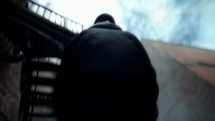
generated EX surrogate for the crowd glimpse (09.1a)
Back view only, face unseen; fits the EX rule
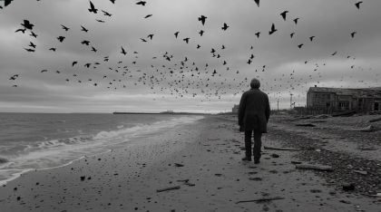
'Summon his calming demeanor from the yonders': the father as remembered film
An elder in a coat, from behind, in the grain of memory
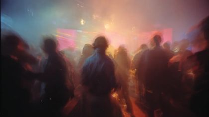
far crowd layer behind the paper crowd cards in 09.1b
Gives the press of bodies without sharp faces that would fight the puppets
What we need
- No painted puppets yet: every 09 pack (poet, ex, mother, father, crowd) is still an empty layout template
- FATHER has no WHO reference image at all; only the text 'long grey overcoat, flat cap, a cane'
- MOTHER's WHO image shows a sleeveless teal floral top and skirt, not the 'long grey cardigan over a house dress' her costume id and text call for
- No generated plate of a phone booth on a harbor sidewalk: make one (or a cardboard booth over view_063)
- No mother's living room with a big window onto the harbor street; nothing in gen/views is close (best score 0.19)
- Two-POET staging (the caller plus the POET in the breakup) needs a second, smaller-scale POET body in profile
- Footprints worn into quay stone: no asset; must be a cut-card overlay
- A POET tear-streak head card under the sunglasses and 'head down' / 'pain' replacement heads
Characters
POET kit →
The leaver: reaches for the EX, packs, calls his mother then his father, walks east
Costume. red_black_sunglasses: black track jacket with red piping from shoulder to cuff, black track trousers, black Chelsea boots, black sunglasses always on; jacket folded over the forearm in 09.2a
Expressions. tired, strain (reach), sad, pain, listening (head tipped up to moon), recognition, calm, tear-streak under lens
Hands. open(reach, stops short), flat_push(crowd shoulder / booth glass), grip(booth_handset), grip(suitcase_poet), grip(folded_jacket), hidden
Cards to paint. head: down; head: pain (mouth set); head: listening tipped up; head: tear-streak variant; second POET at 60% scale, profile stand (the breakup); hand: grip handset; hand: fingers slightly open (stopped reach)
The poet.09 sheet is a blank template with two poses (reach threequarter, sit threequarter) and six hand slots; it lacks the walk/back-view moon pose, the profile 'breakup' POET and any phone-booth pose. The WHO panel (black/red track suit, painted head) is right.
Its action sheet for this poem is on Character Kits v2.
open the action sheet →| action | beats | how the card does it |
|---|---|---|
| hand stops short | shoulder lifts → forearm swings toward EX's back → hand stops a forearm short, fingers part-open → hold through the line → arm drops to side | shoulder + elbow brads only; swap open hand to 'fingers slightly open' card at the hold; body card does not move |
| palm on booth glass | handset raised → free palm comes up → flattens on glass → hold → fingers curl, slides down | forearm on elbow brad; flat_push hand card placed on the booth's acetate pane layer so the palm sits ON the glass |
| hang up | handset lowers → pause at hook → click on → hand rests on box | handset is a separate card pinned to a cord strip; replace grip hand with relaxed hand on the box |
| step falters ('shaken') | stride → knee dips → frame shakes once → father's hand lands → walk resumes | knee brad bends 10°; head swaps to 'down'; father's open-hand card pinned to POET's shoulder layer |
EX kit →
The man who never said it: walks away in the crowd, helps pack, turns to haze
Costume. ex_jacket: dark olive bomber with ribbed hem, dark jeans, white low sneakers; back of head short dark hair, nape, one ear
Expressions. unseen: back of head only, head tilted up to the moon (back view)
Hands. in_pocket, grip(suitcase_handle), pinch(suitcase_zip), relaxed
Cards to paint. back crouch body; back stand with head tipped up; flaked/dissolve copy of back-stand body; hand: pinch zip
The ex.09 sheet has only 'crouch · back' and three hand slots; the back-of-head WHO card is right (never a face). Still need the walk-away back pose and the moon-gazing back stand.
Its action sheet for this poem is on Character Kits v2.
open the action sheet →| action | beats | how the card does it |
|---|---|---|
| zips the suitcase | crouch → left hand steadies handle → right pinch runs along zip → hold → stands | crouch body card (back) with knee + hip brads; pinch hand slides along a slot cut in the suitcase card |
| turns to haze | stands still → edges soften → body breaks into paper flakes from the shoulders down → flakes drift off the quay | duplicate back card pre-cut into 30-40 jigsaw flakes, released one by one in code over a tracing-paper fog layer |
THE WOMAN (was "the poet" puppet) kit →
MOTHER: weeps on the receiver, prays in the armchair, dissolves when he hangs up
Costume. mother_cardigan: long grey cardigan over a house dress, slippers; full rounded afro
Expressions. sad, weeping (folded forward), eyes closed in prayer
Hands. grip(corded_receiver), cup (prayer), relaxed
Cards to paint. grey cardigan body (threequarter stand, lean, sit); head: weeping eyes closed; head: sad eyes open; hands: cupped prayer pair; hand: grip receiver
The woman.09 WHO shows a profile head with eyes closed (useful for prayer) but a teal floral top/skirt; repaint the costume as the grey cardigan. Lean and sit slots are the right poses.
Its action sheet for this poem is on Character Kits v2.
open the action sheet →| action | beats | how the card does it |
|---|---|---|
| folds forward weeping | upright on the phone → shoulders round → torso tips 20° over the receiver → hold → breath back up | waist brad tips the torso card; head swaps to 'weeping, eyes closed' |
| dissolves dot by dot | stands beside him → handset clicks → dots punch out of her from the edges in → gone | code-driven hole-punch mask over her layer; ends with loose paper dots on the pavement |
PARENTS kit →
FATHER: summoned from the yonders, calm, walks east with his son
Costume. elder_father_coat: long grey overcoat, flat cap, a cane; hands behind his back when he arrives
Expressions. calm, half-lidded, glance toward son
Hands. hidden (behind back), open on POET's shoulder, grip(cane)
Cards to paint. entire FATHER figure: front, threequarter, threequarter_back walk; head: calm, half-lidded; hand: open on shoulder; cane card
The parents.09 sheet has only 'stand · front' and two hand slots with no WHO image; the treatment needs threequarter and threequarter_back walks, so the sheet is wrong for the shots.
Its action sheet for this poem is on Character Kits v2.
open the action sheet →| action | beats | how the card does it |
|---|---|---|
| resolves from the yonders | paling east sky → dots gather → figure completes → stands, hands behind back | reverse of the mother's dissolve: punched dots fly in and lock onto the father card |
| hand on shoulder | walking → POET falters → arm lifts → open hand lands → walk on together | shoulder + elbow brads; open hand card overlaps POET's shoulder layer |
PARTY, CLUB AND DJ kit →
Club crowd that fawns over him and closes the gap
Costume. club_dress, club_shirt, club_jacket: one bright dress, one open shirt, one jacket seen from behind
Expressions. joy, calm (back)
Hands. open (reaching for his arm), point
Cards to paint. 3 crowd bodies; joy heads; back-view shoulder card
The party.09 sheet has reach and lean slots but no WHO; painting can be loose: they are occluders more than characters.
Its action sheet for this poem is on Character Kits v2.
open the action sheet →| action | beats | how the card does it |
|---|---|---|
| gap closes | shoulders apart → slide together → EX gone | two back-view crowd cards slide on a track in front of the EX layer |
Props
Sorted by priority. Each has its design, how to build it, the references found in the archive and our footage, and a prompt for its card sheet.
black steel-armored payphone handset on a steel cord
22 cm black card, cord as a separate bendable strip; states: on hook, in hand
References found
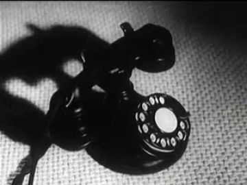
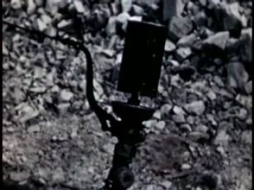
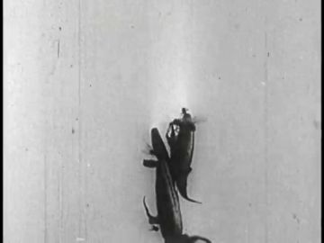


Generation prompt
Prop card sheet: black armored payphone handset with a steel cord, and the wall phone box with its hook; flat corrugated-cardboard card, gouache + confident ink line, raw kraft cut edge, brass brads where it hinges, flat-on even light, plain background. Separate cards: handset; cord strip; phone box with handset on hook; phone box empty hook.
cream home telephone receiver with coiled cord, and the rotary desk phone
21 cm receiver + 24 cm rotary base, cream; states: receiver in hand, off the hook on the table
References found
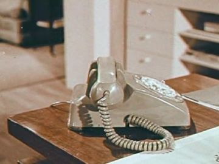
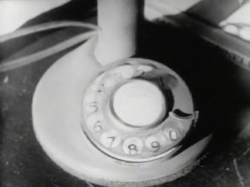
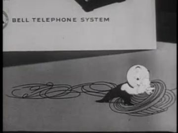

Generation prompt
Prop card sheet: cream rotary desk telephone and its receiver on a coiled cord, 1960s; flat corrugated-cardboard card, gouache + confident ink line, raw kraft cut edge, brass brads where it hinges, flat-on even light, plain background. Separate cards: rotary base with receiver on; rotary base empty cradle; receiver alone; coiled cord strip.
full moon disc
60 cm cream disc on a brad arm, centre cut out so archive moon film can play inside; states: low, high, setting west
References found
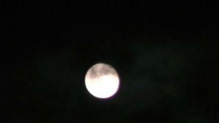
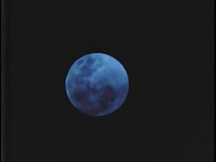

Generation prompt
Prop card sheet: a full moon as a flat cream disc with soft grey maria, plus a long trembling moon road for water; flat corrugated-cardboard card, gouache + confident ink line, raw kraft cut edge, brass brads where it hinges, flat-on even light, plain background. Separate cards: moon disc; moon disc with hollow centre ring; moon road strip; second moon road strip.
glass street phone booth with folding door and lit ceiling panel
Card frame 220 cm, four acetate panes, lit top panel; states: lit/unlit, door open/shut
References found
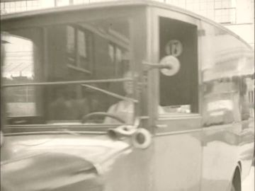
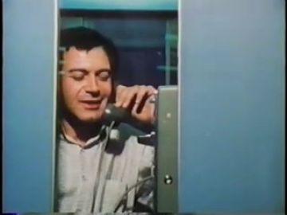
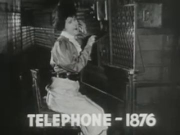

Generation prompt
Prop card sheet: a glass street phone booth, steel frame with four tall glass panes, folding door, a lit ceiling panel and a steel wall phone; flat corrugated-cardboard card, gouache + confident ink line, raw kraft cut edge, brass brads where it hinges, flat-on even light, plain background. Separate cards: booth lit door shut; booth lit door folded open; booth unlit; loose glass pane card.
POET's black hard-shell roller and EX's worn brown leather case
70 cm and 65 cm; states: open/zipped, standing/lying; brown case also as a 'gone' outline
Generation prompt
Prop card sheet: a black hard-shell rolling suitcase and a worn brown leather suitcase with straps; flat corrugated-cardboard card, gouache + confident ink line, raw kraft cut edge, brass brads where it hinges, flat-on even light, plain background. Separate cards: black case upright zipped; black case lying open; brown case upright; brown case handle; zipper pull tab.
upholstered floral armchair and side table
95 cm, floral print gouache; one state
References found


Generation prompt
Prop card sheet: an upholstered floral armchair, a small wooden side table and a table lamp with a pleated shade; flat corrugated-cardboard card, gouache + confident ink line, raw kraft cut edge, brass brads where it hinges, flat-on even light, plain background. Separate cards: armchair; side table; lamp lit; lamp unlit.
trail of worn shoe prints in quay stone
30 cm prints, ~70 cm stride, dark wet gouache on a long floor strip
References found
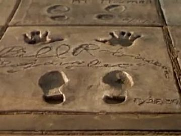

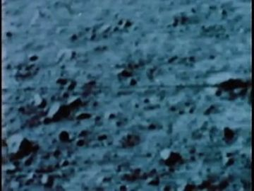

Generation prompt
Prop card sheet: men's shoe prints worn dark into pale stone, a long trail strip of them, plus single prints; flat corrugated-cardboard card, gouache + confident ink line, raw kraft cut edge, brass brads where it hinges, flat-on even light, plain background. Separate cards: trail strip; left print; right print.
rising sun disc in the harbor mouth
70 cm red-orange disc with a half-sunk state
References found
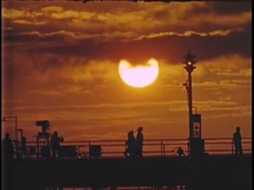
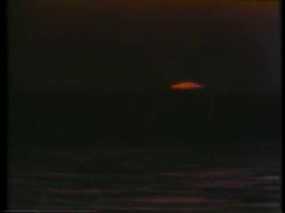
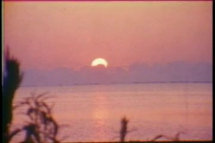


Generation prompt
Prop card sheet: a rising sun as a flat red-orange disc and its reflection strip; flat corrugated-cardboard card, gouache + confident ink line, raw kraft cut edge, brass brads where it hinges, flat-on even light, plain background. Separate cards: half-sunk disc; full disc; reflection strip.
POET's black jacket folded over the forearm
50 cm black card with a red piping line
References found
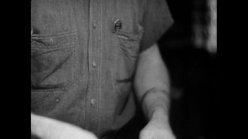
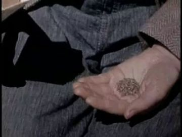
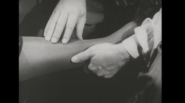
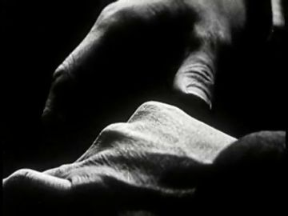

Generation prompt
Prop card sheet: a black track jacket with red piping folded over a forearm; flat corrugated-cardboard card, gouache + confident ink line, raw kraft cut edge, brass brads where it hinges, flat-on even light, plain background. Separate cards: folded jacket; jacket draped.
Places
atlantis_club_sidewalk
Night street outside the clubs: black wet asphalt, a row of glowing glass panels, colour bleeding into the puddles; a crush of bodies at the curb
Where the archive opens: the nearest lit glass panel (vertical, bright, large); the club door glass; the wet street reflections (weak)
References: our footage, Atlantis views, found film


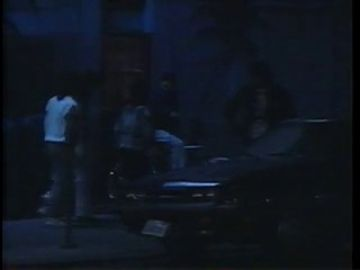
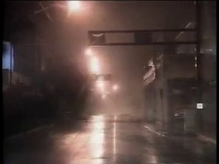
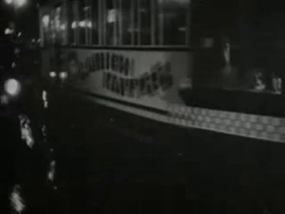
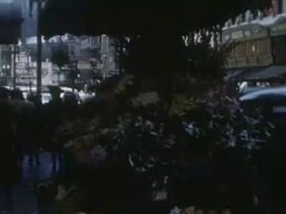
atlantis_harbor_street
The inner harbor quay at night: stone lip over black water, teal lamps, low far shore, moon over the water
Where the archive opens: the moon disc (cut-out, large); a lit warehouse doorway on the far shore; the moon road on the water (only if bright and wide)
References: our footage, Atlantis views, found film


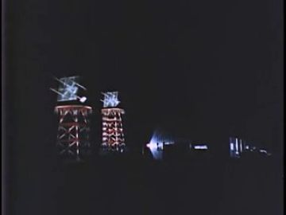

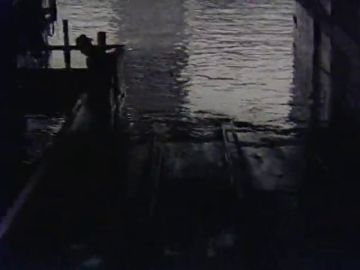
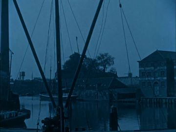
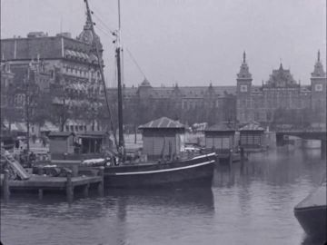
No plate yet.
harbor_phonebooth
Same quay at a lit glass booth under a street lamp; the booth is a lantern in the dark; the breakup plays further down the sidewalk
Where the archive opens: the booth's glass panes (best: vertical, lit, close); the lit ceiling panel; the window of the far shore shed
References: our footage, Atlantis views, found film


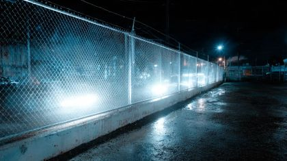

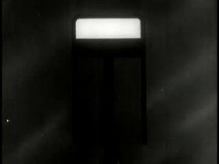
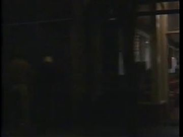
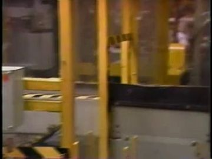
Generation prompt
Wide night plate, no people: a harbor sidewalk of wet stone running left to right along a quay over black water; a single lit glass phone booth at left third under a sodium street lamp; teal harbor lamps reflected in long streaks; low sheds and one crane on the far shore; cinematic 35mm, deep shadows, empty space on the right half of the sidewalk for figures
No plate yet.
mother_living_room
Her living room: floral paper, lamp pool, armchair, rotary phone on a side table, a big window that looks straight onto the night harbor sidewalk
Where the archive opens: the big window (vertical panes, archive or the breakup); a framed photo on the wall (All My Babies); the lampshade (warm, small)
References: our footage, Atlantis views, found film

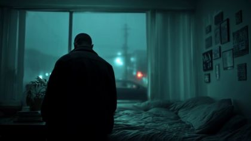


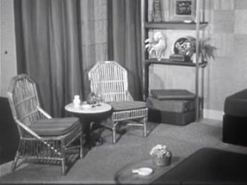
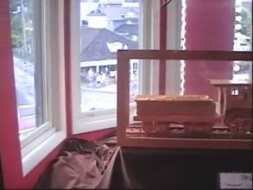
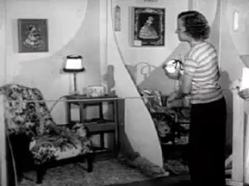
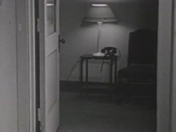
Generation prompt
Interior plate, no people: a modest 1970s living room at night, floral wallpaper, a floral armchair, a side table with a cream rotary phone and a lit lamp, a large three-pane window on the back wall looking out onto a dark wet harbor sidewalk lit by teal lamps; warm interior, cold exterior, 35mm, flat frontal camera
harbor_path_east
The quay path running east to the harbor mouth; fog turns orange before sunrise; father and son walk it in the prints of earlier walks
Where the archive opens: the harbor mouth (sun on water, bright and centred); the glowing rail (long, low); a fog wall (soft, weak)
References: our footage, Atlantis views, found film

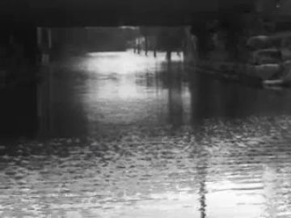

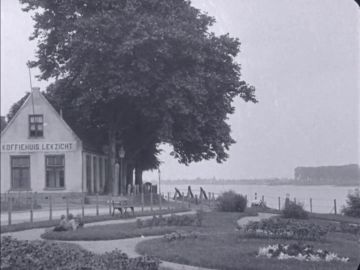
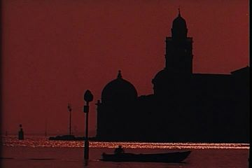
Generation prompt
Wide dawn plate, no people: a stone quay path running straight away from camera along an inner harbor toward the harbor mouth, low orange fog, a lit handrail along the water, harbor lamps still on and beginning to go out, faint worn footprints on the stone; 35mm, warm east light, cold shadows
Effects
| effect | how, in this cut-out world |
|---|---|
| club_light_spill | Colour gels as soft transparent card wedges from the lit panels, dragged across the puppets as they pass |
| moon_road_on_water | Two cut strips of crumpled silver paper on the water layer, shimmered in code; in 09.1d they rotate on brads into a V |
| harbor_abyss | A black velvet card slides over the water between the two pairs; the moon road drops into it and goes out |
| tears | Clear acetate drop cards with a white ink highlight, slid down from under the sunglasses card |
| tear_ring_on_water | Concentric rings cut from thin white paper scaled up in code over the dark water; or What's It to You? water insert |
| dissolve_out / dissolve_in | Hole-punch mask in code: MOTHER's card loses paper dots from the edge inward; FATHER's card gathers dots in reverse |
| dawn_glow_east / sunrise | Back-lit tracing-paper sky behind the cut far shore, warmed from blue to orange; archive sun disc (National Wildlife Refuge System) in the harbor mouth |
| harbor_lights_out | Lamp cards have pin-hole lights; switch them off one by one, east to west |
| ex_haze_dissolve | EX's pre-cut flake copy releases flakes onto a drifting tracing-paper fog strip that blows off the quay |
| blue_accent | One small blue gel dot on POET's chest card, the only saturated blue in the dawn frame |
The puppet passage
his line · 09_L01
“Accepting you'll never say nor ever feel, my love was real.”
the archive answers · Mooch Goes to Hollywood (1971)
“I love you but I can't keep you.”
a hand that stops short · the club's glass exit door behind the crowd
Keep. L01 and 'a hand that stops short' are the right line and gesture: one held reach that becomes a farewell. Mooch Goes to Hollywood's 'I love you but I can't keep you' answers it in plain words.
Better. Use the figure-free gen_ac146f1212 wall of lit glass panels instead of P09-001's crowded plate, and open the archive in the nearest, largest vertical panel just past his stopped hand, so the film sits where the EX was. Keep the crowd as soft occluder cards, not plate figures. Swap to a 'down' head when he lowers his hand at the end of the line.
Other lines that could carry one:
- L13 'Before I go, I call on my mother': palm flat on the booth glass, handset to ear; Town and the Telephone or We Learn About the Telephone opens in the booth pane
- L16 'we explain my way of birth then and even after prayer': mother's hands cupped in prayer, POET's open hand held out; All My Babies opens in the living-room window
- L04 'we look at the moon the way we used to see it': both heads tipped up (back view), held; Moon And Cloud 4 plays inside the large cut-out moon disc
- L30 'We stroll, father and son, hearted and shaken': father's open hand lands on his shoulder and stays; the sunrise film opens in the harbor mouth at the end of view_085's rail
- L26 'and retrace his footsteps now and then': POET's head lowers to the prints; an archive home movie of a man walking opens in a puddle-bright footprint (only if the film is bright)
Scene ideas
- Moon as projector: the 60 cm moon card has a hollow centre; Moon And Cloud 4 (arch_a4b01405-270c) plays inside it on L04, then Moon And Cloud 2 (arch_1989df7c-bc86) on L18 'the moon looking at us', smaller and higher
- The booth is the frame for all of 09.2: Town and the Telephone (arch_575666be-a572) plays in one pane while POET's palm is flat on the next; the breakup pair stands small on view_063 behind
- Mother's window: build the room from Singing Wires (arch_7683b7a2-f2a4) as a cardboard diorama; the big window shows gen_ac146f1212 with the breakup pair in it, and All My Babies (arch_699c5e5b-0f93) plays in a framed photo when he 'explains my way of birth'
- Father from the yonders: cut from the B/W beach walker gen_c77b296bbf to the FATHER card gathering dots over Low-Lying Fog (arch_f96fce81-93a9)
- Packing as archive: on L12 'You help me gather', cut in the red cases of 6 1/2 Magic Hours (arch_077c5d65-22a7) for one beat, then back to EX's back crouched over the paper suitcase
- East walk on view_085: the rail glows, the lamp cards switch off east to west, and National Wildlife Refuge System's sun (arch_02203def-0487) rises in the harbor mouth on L25
- Seed for 10: in 09.4d, after the EX flakes away, the edge of a parked black motorcycle with one moonlit tank glint is already at the curb ('the bike was always there')
References to look for
| what | where to look |
|---|---|
| phone booths and home telephones, 1950s-60s | archive: 'telephone booth', 'pay telephone', Bell System films, 'Town and the Telephone', 'dial phone' |
| birth and family in documentary | archive: 'All My Babies', midwife, maternity, family album home movies |
| night harbor and quays | archive: harbor at night, Rotterdam/Amsterdam 1920s city films (Oud-Amsterdam, Gouda), 'Over the Waves' |
| silhouette cut-out tenderness | Lotte Reiniger (silhouette films), Michel Ocelot 'Princes et Princesses' |
| Black family interiors, warmth and grief | Roy DeCarava photographs, Carrie Mae Weems 'Kitchen Table Series', Charles Burnett 'Killer of Sheep' |
| walking east at dawn, father figure | archive: 'sunrise over water', 'harbor dawn'; Ozu's father-and-son walks (Late Spring, There Was a Father) |
Our footage for this poem
The 20 generated clips and 8 Atlantis views closest to the poem (CLIP, image against its treatment and lines).

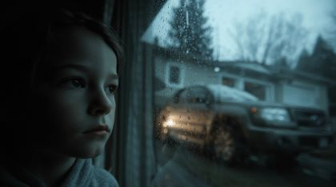


The kit
| status | kind | item | source |
|---|---|---|---|
| need | body | FATHER overcoat, flat cap, cane (stand, walk 3/4, 3/4 back) | parents.elder_father_coat templates; no WHO image |
| need | body | crowd: 3 club bodies + 2 back-shoulder occluders | party packs |
| need | fx | dot dissolve, flake haze, tear drops, lights-out | code + paper |
| need | head | POET heads: down, pain, listening-up, tear-streak | to generate in kit style |
| need | prop | phone booth, booth handset + cord | to generate; ref arch_575666be-a572 |
| need | prop | rotary phone + receiver | to generate; ref arch_b9f42a62-ff48 |
| need | prop | two suitcases | to generate; ref arch_077c5d65-22a7 |
| need | prop | moon disc (hollow) + moon roads | to generate |
| need | set | phone booth plate | to generate |
| need | set | mother's living room | to generate / build from Singing Wires ref |
| partial | body | POET body red_black_sunglasses (threequarter walk/reach, back stand, profile stand) | existing pack templates, to paint |
| partial | body | EX back walk, back crouch, back stand head-up, flake copy | ex.ex_jacket packs; flake copy to make |
| partial | body | MOTHER grey cardigan body (stand, lean, sit), weeping + prayer heads, cupped hands | woman.mother_cardigan packs; repaint costume |
| partial | hand | POET hands: stopped-open, flat_push, grip handset, grip suitcase | poet.red_black_sunglasses.hands template |
| partial | set | east path plate | view_085 |
| partial | sound | VO 09 dry reading 108.8 s; harbor water, phone ring, dial tone, gulls at dawn | reading wav exists; fx to find |
| have | set | club sidewalk plate | gen_ac146f1212 |
| have | set | harbor quay plate | view_063 |